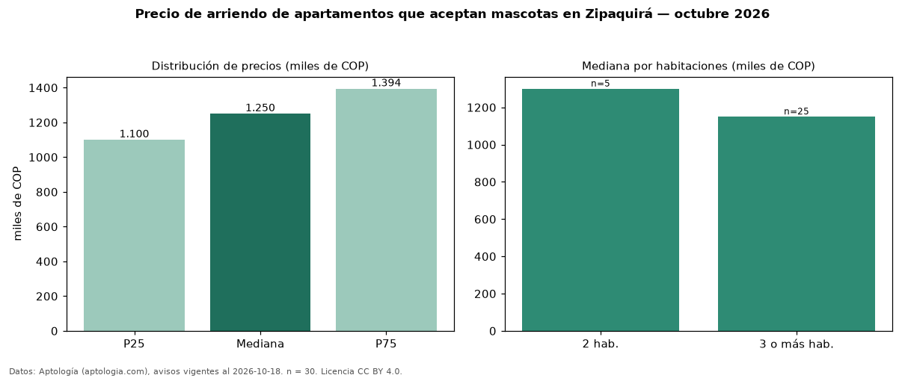

Precio de arriendo de apartamentos que aceptan mascotas en Zipaquirá — octubre 2026
En Zipaquirá, la mediana de canon mensual de apartamentos que aceptan mascotas es COP 1,25 millones, según 30 avisos vigentes. Eso es 4 % menos que la mediana de todos los apartamentos en arriendo de Zipaquirá (COP 1,30 millones, n = 176); este segmento reúne el 17 % de esos avisos. Por metro cuadrado, la mediana es COP 20.205/m² al mes (n = 30), 7 % por debajo del conjunto de referencia (COP 21.818/m²). El área mediana anunciada es 60 m². El segmento con más oferta es el de 3 o más habitaciones (25 avisos, mediana COP 1,15 millones); pasar de 2 habitaciones a 3 o más habitaciones cambia la mediana −12 %. La administración mediana declarada es COP 255.000 al mes (n = 15), aparte del canon. El estrato más frecuente es 3 (77 % de los avisos con estrato). La mitad central de los avisos va de COP 1,10 millones a COP 1,39 millones (razón 1,3), una dispersión baja. Datos: Aptología (aptologia.com), CC BY 4.0 — https://www.aptologia.com/arriendo/zipaquira. Archivos: PDF, CSV con las cifras y gráfica PNG.

| Avisos únicos | 30 |
|---|---|
| Percentil 25 | COP 1.100.000 |
| Mediana | COP 1.250.000 |
| Percentil 75 | COP 1.393.750 |
| Mediana por m² | COP 20.204 |
Fuente: avisos vigentes de portales inmobiliarios recopilados por Aptología, deduplicados (mínimo 30 avisos únicos por celda). Precios pedidos, no cerrados. Fecha: 2026-10-18.